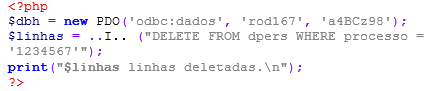

Exercícios Tema 6 -
(IFB - 2017 - IFB - Professor - Informática/ Desenvolvimento de Sistemas)
Segundo Beighley e Morrison (2010), quando um formulário HTML envia dados a um script PHP, utiliza-se um conjunto de variáveis superglobais (superglobais são variáveis pré-definidas pelo interpretador PHP e que estão sempre disponíveis em todos os escopos) para acessar os dados enviados pelo formulário HTML. Assinale a alternativa que apresenta os identificadores/nomes de variáveis superglobais corretos para a tarefa de acessar dados enviados por um formulário HTML:
(Colégio Pedro II - 2016 - Colégio Pedro II - Professor - Ciência da Computação)
O código de PHP abaixo insere dados em um banco de dados local MySQL, cujo usuário é root; a senha é mypsw e o nome do banco de dados, bdConcurso.
(FCC - 2017 - DPE-RS - Analista - Desenvolvimento de Sistemas)
Considere o fragmento de código abaixo, em um ambiente PHP em condições ideais.
Para que o comando DELETE possa ser executado corretamente, a lacuna I deve ser preenchida com:
(FADESP - 2017 - COSANPA - Analista de Sistema)
A implementação correta de uma classe chamada Usuário em PHP é:
?php
class Usuario
{
var $nome; var $cpf;
public function _contruct($nome, $cpf){
$this->nome = $nome;
$this->cpf = $cpf;
}
}
?
(FCC - 2013 - AL-RN - Técnico Legislativo - Programador)
Para receber, em um arquivo PHP no servidor, os valores enviados em campos texto de um formulário HTML, utilizam-se variáveis predefinidas. Se o elemento form do formulário contiver method="get", a variável utilizada será ..I.. . Caso contenha method="post", a variável utilizada será ..II.. . Pode-se também utilizar a variável ..III.. que recebe os valores tanto se method="get" quanto se method="post".
As lacunas I, II e III da frase acima são preenchidas, correta e respectivamente, com: